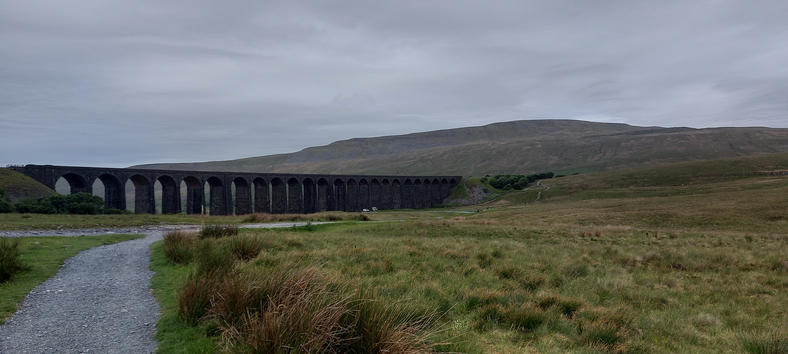
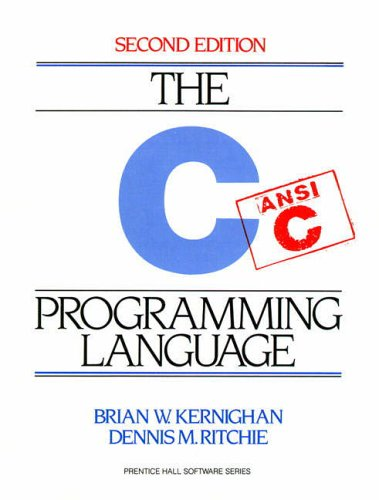
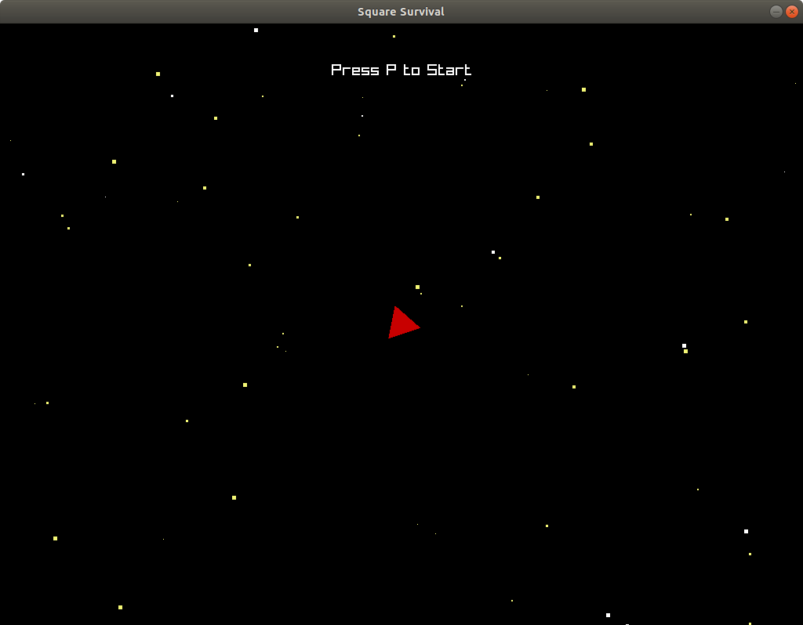
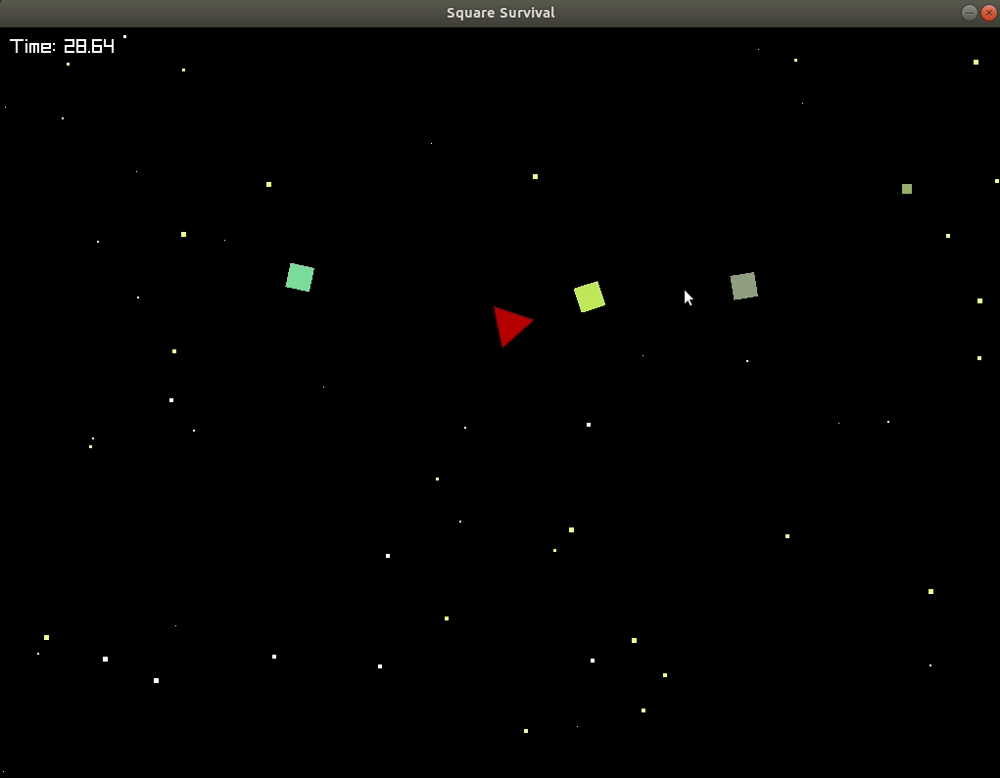
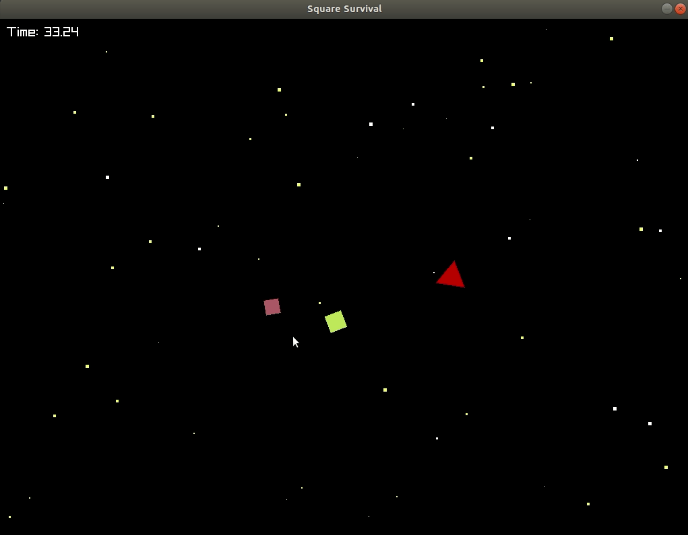

I started off the week by climbing the Yorkshire Three Peaks. The three peaks are three fells in the Yorkshire dales which are relatively close to each other. The challenge is to climb all three in under twelve hours. I can proudly say we climbed them way under twelve hours.
To be honest I wasn't that well prepared for them. I didn't release how much walking 25 miles hurts, and I only realised when I got home that my foot was bleeding from doing it. I believe this was due to the walking boots I was wearing.
During the walk we walked past many Yorkshire landmarks. Such as the Ribblehead Viaduct which is part of the famous Settle-Carlisle railway. In fact I was even surprised to see trains on it during lock down. The most impressive thing about the walk was looking back and seeing the other peaks you have climbed in the far distance. I didn't realise how far apart they are from one another.
Additionally this week I taught myself the C programming language. C compared to other languages such as Python and Java is a low level programming language. In C there is no such thing as a String data type. A String is simply a pointer to an array of characters which is terminated with the null terminator char.
I decided to learn this language for two reasons. Firstly most modern programming languages are descendants of the C programming language (Python is written in C), therefore understanding the language helps you to understand how data structures and dynamic memory allocation actually works. Secondly I decided to learn it because it is on the syllabus for second year.
It is my firm belief that the only way to learn something is to learn by doing. That is simply create something. Therefore to test my knowledge I decided to make a game in the C programming language. It is incredibly simple and only consists of squares and triangles. However it uses a reasonably advanced camera system and I also implemented parallax to simulate depth in the game.
The idea of the game is to survive as long as possible against a bunch of squares. The squares vary in speed and colour. The player's triangle points in the direction of the mouse and shoots where the mouse is pointed. As time goes on more and more enemies spawn per seconds making the game harder.
Above is a demonstration of the player firing using their normal fire ability. The camera actually moves slower than the player and always moves in the direction of the player. This makes the game harder as the player is forced to move at a certain speed.
Above shows the player demonstrating their burst ability. If the player presses Z the player then emits their remaining bullets. This is useful when the player is surrounded and needs to quickly escape.
The game however has multiple problems. First of all I did not build many data structures and therefore the game is incredibly inefficient. This isn't too much of a problem due to it's simplicity but if I was to make the game a lot more complicated and the world a lot more bigger I would have to improve the efficiency of the game.
This week I have not been as productive as I would have hoped. However I am reasonably happy with the game I created. It is incredibly simple but it is a good introduction into game development. Next week I aim to make a more complicated game in an object oriented language such as C++.